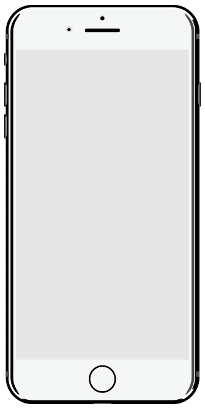

Скан & селфи баннер для Gifted
Задача
Анонсирование нового сериала от FOX «Одаренные» о подростках со сверспособностями.
Задача
Сериал о подростках, внезапно открывающих суперспособности натолкнула нас на идею предложить узнать о своих скрытых способностях, сканируя фото. Пользователь делает селфи, после чего запускается анимация сканирования фото и выдача результатов. По фотографии определяются склонность к суперспособностям, которые есть у героев сериала. Результатом пользовател мог поделиться в VK и FB.
